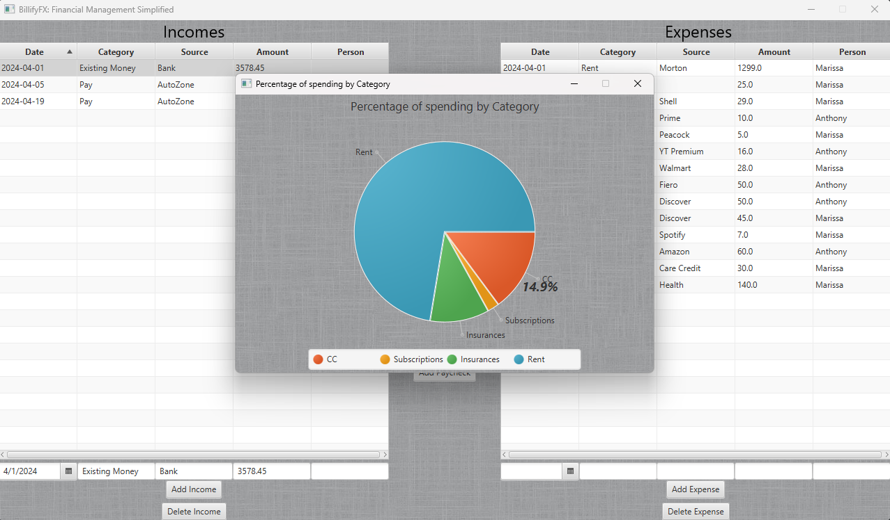
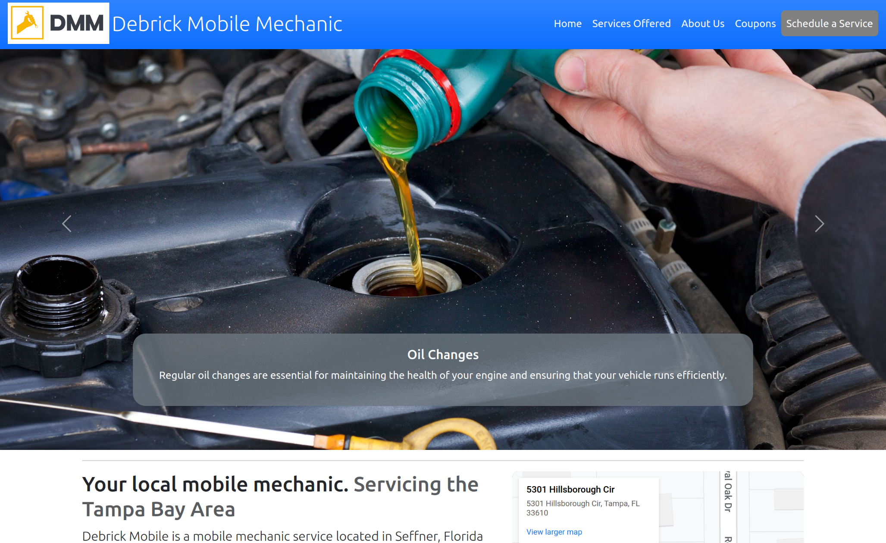
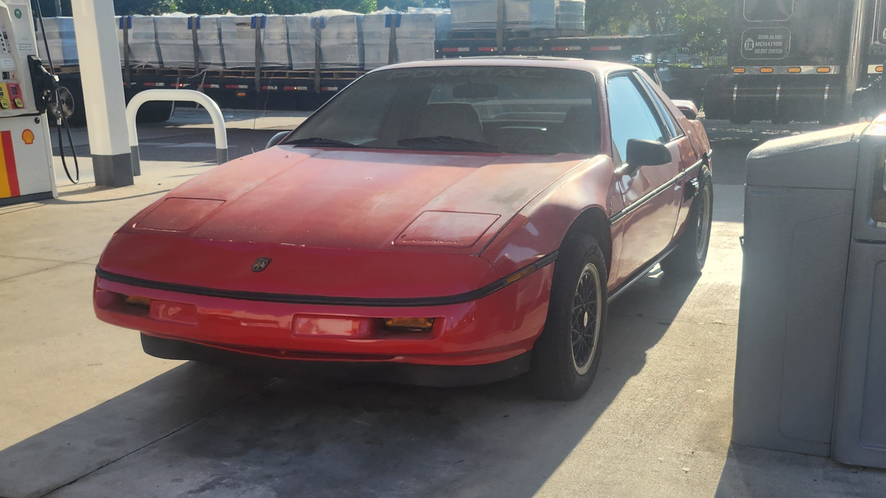

Anthony Clemens
Software Engineer | Technology Development and Management Graduate
Educational Experience:
Hello! I am an aspiring graduating from St. Petersburg College in July of 2024 with a bachelor's degree in Technology Development and Management, specializing in software development. I have a passion for technology, which is matched with my solid foundation in computer programming, evidenced by my Advanced Computer Programmer Certificate from St. Petersburg College as well, specializing in Java development.
My technical toolkit is rich and varied. I have developed several Java codebases, crafted a website for a mobile mechanic small business, and have hands-on experience with frameworks like JavaFX, Hibernate, Spring Boot, and Maven. I’m also proficient in SQL, HTML, CSS, and Python, and have a working knowledge of JavaScript and C++.
Beyond programming, my academic journey has equipped me with key industry skills such as project management, agile methodologies, algorithmic design, human-computer interfaces, and an understanding of the legal aspects of managing technology. I’m eager to demonstrate and enhance this blend of programming expertise and management to a forward-thinking company.
My Projects:
Check out my GitHub for projects I've worked on:
Billify:
Billify was my first big project that taught me how to use Java Maven, and expand on my existing knowledge of JavaFX. Billify includes expense tracking, allowing users to input and categorize their expenses, which includes their bills, groceries, insurances, entertainment, and savings, etc. Income management will also be included in Billify via the ability to add paychecks, freelancing deposits for things such as Doordash or Instacart, and other forms of income. Another function would be calculating how much money is left after a selectable timeframe, as low as a day, and as large as a year, allowing the user to get a wide range of information on how much money is left over or missing after expenses. In addition to net balance calculation, the end-user can view summaries, charts, and trends all related to their financial activities, giving the user total control over how they can view their expenses and income.
Click here to view Billify ReportDebrick Mobile Mechanic Website
Debrick Mobile is a mobile mechanic shop located in Seffner, FL, of which I was their Software Developer, in which they commissioned a website from me. According to Google Console, the website has over 7,000 impressions. I learned JQuery, Javascript, and enhanced my HTML and CSS skills with this project.
Click here to view a copy of debrickmobile.comTuning a '88 Fiero
This project was my first official and documented example of solving a problem with different softwares to create a workflow. Other than programming, I really enjoy working on cars. This is my 1988 Pontiac Fiero Formula I saved from South Tampa after it sat rotting for over 20 years. I was having driveability issues and had decided the best way to solve it was to come up with a way to tune it. I had an idea to use an EEPROM instead of the stock EPROM from the 80's, so I found a compatible chip, figured out the wiring to convert it to work with the Fiero ECU, and found a program to write those EEPROM chips with binary files. After scowering the internet, I was able to find a freeware version of GMEPro, an ECU tuning utility, and then a program to combine multiple binary files to let the user switch tune files.
Click here to view my writeup on tuning a FieroProfessional Experience:
Assistant Store Manager
Autozone, Sept 2023 - Current
- Assist the Store Manager in leading and developing a team of dedicated personnel, ensuring high performance and customer service standards are met.
- Oversee daily operations, including sales, inventory management, and compliance with company policies to drive store success.
- Maintain a strong focus on customer satisfaction, addressing and resolving customer issues with professionalism and care.
Parts Sales Manager
Autozone, Jul 2022 - Sept 2023
- Lead and motivate a team of sales associates to meet and exceed monthly sales goals, ensuring the highest levels of customer satisfaction and loyalty.
- Train and develop the sales team, providing them with the skills and knowledge needed to excel in customer service and achieve sales targets.
- Monitor daily sales performance, manage inventory levels, and ensure compliance with company policies to maintain store efficiency and customer trust.
Prepared Foods Team Member
Whole Foods, Feb 2022 - Jul 2022
- Provide exceptional hospitality to guests regarding food service and sales.
- Cross-trained in cold food preparation, pizza preparation, as well as servicing customers in those same areas.
- Developed professional skills through managerial training and advice.
Deli Clerk
Publix, Jul 2020 - Feb 2022
- Provide premiere customer service in sliced meats/cheeses, sandwich production, and cooked chicken production.
- Operate slicers, ovens, fryers, and scales.
- Organize and stock shelves related to the department, as well as scanning out defective and expired products.
- Operate as Associate-In-Charge when no other superior is present.
Contact Me
If you have any questions, feel free to reach out!
Send Email